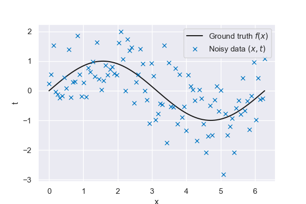
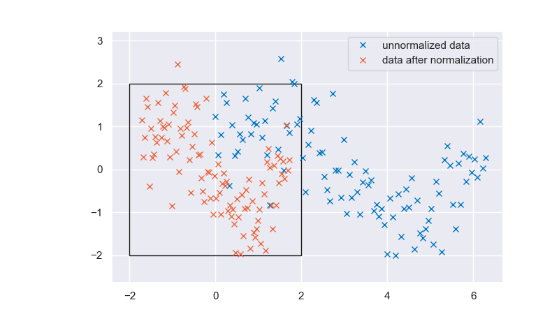
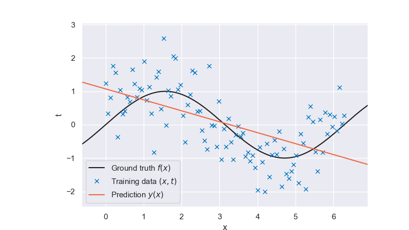
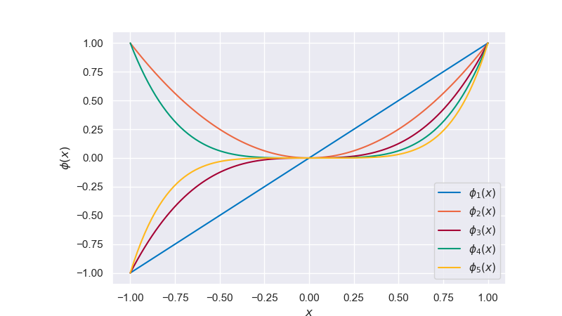
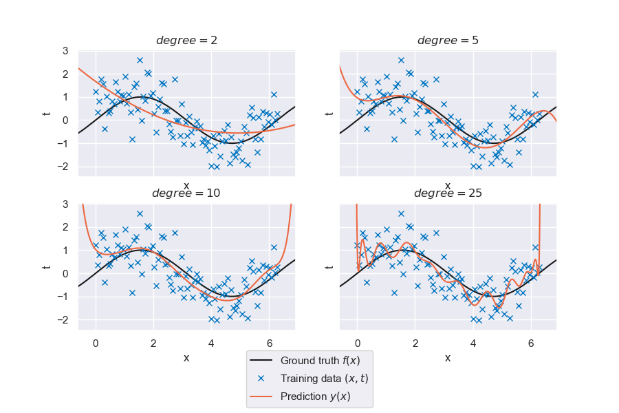
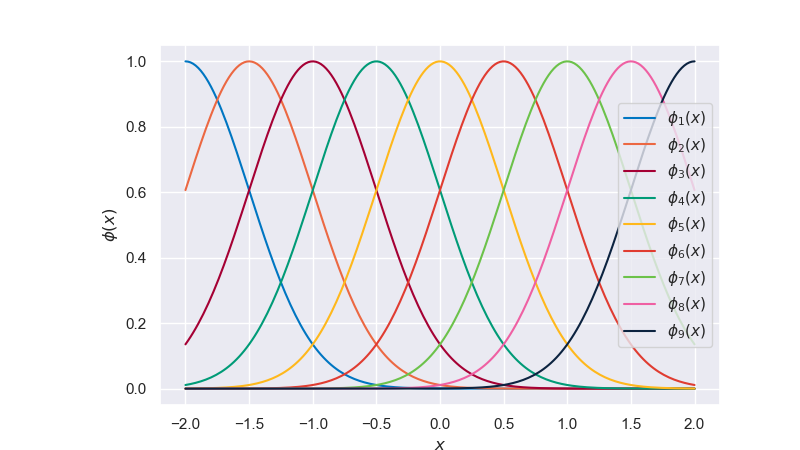
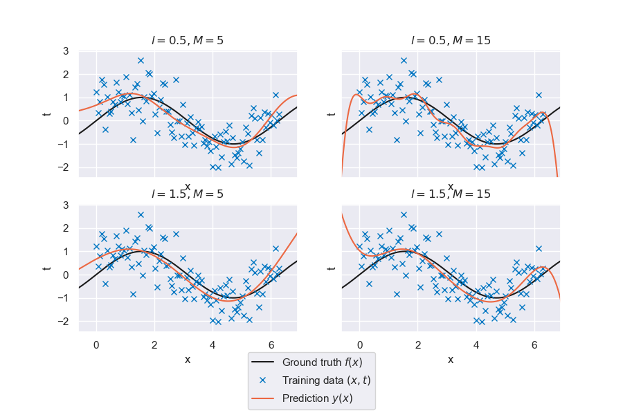
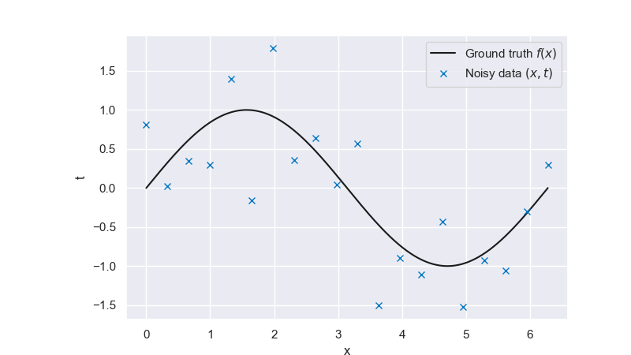
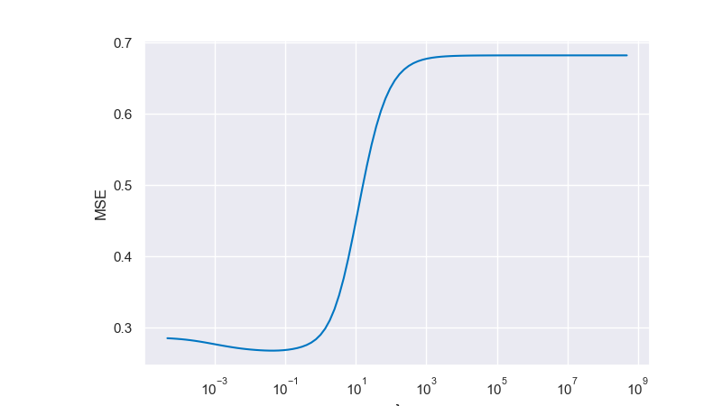
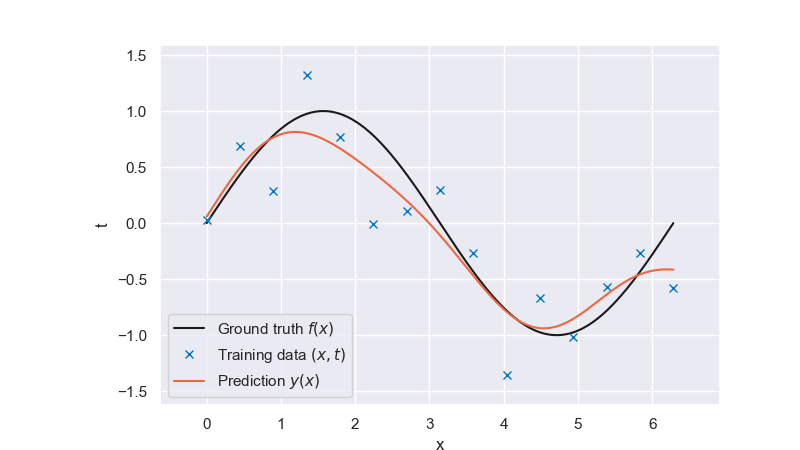

6.3. Linear Basis Function Models and Regularization#
# pip install packages that are not in Pyodide
%pip install ipympl==0.9.3
%pip install seaborn==0.12.2
# Import the necessary libraries
import numpy as np
import matplotlib.pyplot as plt
import matplotlib.patches as patches
from sklearn.neighbors import KNeighborsRegressor
from sklearn.preprocessing import StandardScaler
from mude_tools import magicplotter
from cycler import cycler
import seaborn as sns
%matplotlib widget
# Set the color scheme
sns.set_theme()
colors = [
"#0076C2",
"#EC6842",
"#A50034",
"#009B77",
"#FFB81C",
"#E03C31",
"#6CC24A",
"#EF60A3",
"#0C2340",
"#00B8C8",
"#6F1D77",
]
plt.rcParams["axes.prop_cycle"] = cycler(color=colors)
This page contains interactive python element: click –> Live Code in the top right corner to activate it.
Linear Basic Function Models#
So far, we have been using a non-parametric model with k-nearest neighbors, meaning we needed access to the whole training dataset for each prediction. We will now focus on parametric models, namely linear models with basis functions. Parametric models are defined by a finite set of parameters calibrated in a training step. All we need for a prediction then are the parameter values. There is no longer a need to carry the whole dataset with us; the information used to make predictions is encoded in the model parameters. Once again, we will employ the simple sine function to demonstrate the concepts presented in this chapter.
# The true function relating t to x
def f_truth(x, freq=1, **kwargs):
# Return a sine with a frequency of f
return np.sin(x * freq)
# The data generation function
def f_data(epsilon=0.7, N=100, **kwargs):
# Apply a seed if one is given
if "seed" in kwargs:
np.random.seed(kwargs["seed"])
# Get the minimum and maximum
xmin = kwargs.get("xmin", 0)
xmax = kwargs.get("xmax", 2 * np.pi)
# Generate N evenly spaced observation locations
x = np.linspace(xmin, xmax, N)
# Generate N noisy observations (1 at each location)
t = f_truth(x, **kwargs) + np.random.normal(0, epsilon, N)
# Return both the locations and the observations
return x, t

Fig. 6.25 Ground truth vs noisy data#
Linear model#
The key idea behind linear regression models is that they are linear in their parameters \(\mathbf{w}\). They might be linear in their inputs as well, although this does not necessarily need to case, as we will see later on in this chapter. The simplest approach is to model our target function \(y(x)\) as a linear combination of the coordinates \(x\):
In the one dimensional case, this is equivalent to fitting a straight line through our datapoints. The parameter \(w_0\), also referred to as bias (not to be confused with the model bias from the previous chapter), determines the intercept, \(w_1\) determines the slope. The introduction of a dummy input \(x_0 = 1\) allows us to write the model in a more concise way:
We will use the least squares error function from the previous chapter to fit our model, but will first show how this choice is motivated by a Maximum likelihood approach.
Maximum Likelihood Estimation#
Oftentimes, it is assumed that the target \(t\) is given by a deterministic function \(y(\mathbf{x}, \mathbf{w})\) with additive Gaussian noise so that
with precision \(\beta\) (which is defined as \(1/\sigma^2\)). Note that this assumption is only justified in case of a unimodal conditional distribution for \(t\). It can have grave influence on the model accuracy and its validity therefore must be carefully assessed.
As seen in the previous chapter, for the square loss function, the optimal prediction for some value \(\mathbf{x}\) is given by the conditional mean of the target variable \(t\). In this case, this conditional mean is given by:
Given a new input \(\mathbf{x}\), the distribution of \(t\) that follows from our model is
Consider now a dataset \(\mathcal{D}\) consisting of inputs \(\mathbf{X} = \{ \mathbf{x}_1, \dots, \mathbf{x}_n \}\) and targets \(\mathbf{t} = \{ t_1, \dots, t_n \}\). Assuming our datapoints are drawn independently from the same distribution (i.i.d. assumption), the likelihood of drawing this dataset from our model is
also referred to as the likelihood function. Taking the logarithm and expanding on the classic expression for a multivariate Gaussian distribution gives:
where we can identify our square-error loss function in the last term. Note that the first two terms are constant for a given dataset and have no influence on the parameter setting \(\bar{\mathbf{w}}\) that maximizes the likelihood. Those optimal parameters values \(\bar{\mathbf{w}}\) can be obtained by setting the gradient of our loss function w.r.t. \(\mathbf{w}\) to zero and solving for \(\mathbf{w}\).
It is convenient to concatenate all inputs to a design matrix \(\mathbf{X} = [\mathbf{x}_1^T, ..., \mathbf{x}_N^T]^T\). Solving for \(\mathbf{w}\) gives
which is the classical expression for a least-squares solution you have by now seen many times during the course.
Data normalization#
Before we move on to fitting the model, we normalize our data. This step is recommended for most machine learning techniques and is often even necessary. A non-normalized dataset almost always leads to a numerically more challenging optimization problem. Part of model selection is to ensure that our basis functions show the desired behavior in the relevant parts of the domain. We center and rescale our data, a process referred to as standardization, to operate in the vicinity of the origin only. The standardized dataset \(\hat{\mathcal{D}} = ( \hat{x}, \hat{t} )\) is obtained by subtracting the sample mean \(\mu\), and dividing by the sample standard deviation \(\sigma\) of the data:
Take a look below at the standardized and unstandardized data. Note that the standardization of the target \(t\) has a marginal effect, as the sine function is already centered at 0 and almost shows a standard deviation of 1. A 4 by 4 square has been added to indicate the region from \(-2 \hat{\sigma}\) to \(2 \hat{\sigma}\). As you can see, all input and output variables fall roughly in this interval, and this property allows for more stability when applying numerical solvers to the problem.
Note that there is no strictly correct way to shift and scale input data. Depending on the distribution of the data, a min-max scaling or a quantile scaling might lead to a better numerical setup. The dataset’s structure needs to be assessed carefully to make an informed decision on normalization.

Fig. 6.26 Unnormalized and normalized data#
# Function for the basis functions
def LinearBasis(x, **kwargs):
"""
Represents a 1D linear basis.
"""
num_basis = 2 # The number of basis functions is 2 due to the dummy input
x = x.reshape(-1, 1)
return np.hstack((np.ones_like(x), x))
# Define the prediction locations
# (note that these are different from the locations where we observed our data)
# x_pred = np.linspace(-1, 2*np.pi+1, 1000)
# Define a function that makes a prediction at the given locations, based on the given (x,t) data
def predict(x, t, x_pred, basis, normalize=True, **kwargs):
# reshape if necessary for scalers
x = x[:, None] if len(x.shape) == 1 else x
t = t[:, None] if len(t.shape) == 1 else t
x_pred = x_pred[:, None] if len(x_pred.shape) == 1 else x_pred
# normalize data (you will see why we have to do this further below)
xscaler, tscaler = StandardScaler(), StandardScaler()
if normalize == True:
x_sc, t_sc = xscaler.fit_transform(x), tscaler.fit_transform(t)
else:
x_sc, t_sc = x, t
# Get the variable matrix using the basis function phi
Phi = basis(x_sc.reshape(-1), **kwargs)
t_sc = t_sc.reshape(-1)
if normalize == True:
x_pred = xscaler.transform(x_pred).reshape(-1)
else:
x_pred = x_pred.reshape(-1)
# Get the coefficient vector
w = np.linalg.solve(Phi.T @ Phi, Phi.T @ t_sc)
# Make a prediction in the prediction locations
Phi_pred = basis(x_pred, **kwargs)
t_pred = Phi_pred @ w
# Return the predicted values
if normalize == True:
return tscaler.inverse_transform(t_pred[:, None]).reshape(-1)
else:
return t_pred[:, None].reshape(-1)
Coding in python
Different packages will offer distinct functionalities to perform the normalization. In the case of scikit-learn, the package sklearn.preprocessing offers an wide range of normalizers:
sklearn.preprocessing.StandardScalerimplements the normalization scheme from our linear models page, based on sample mean and standard deviation;sklearn.preprocessing.MinMaxScaleruses dataset bounds to scale each feature based on its minimum and maximum value across the complete training dataset. This makes each separate input feature fall within a \([0,1]\) interval;sklearn.preprocessing.MaxAbsScalerscales each feature based only on their maximum value across the dataset.sklearn.preprocessing.RobustScalerimplements a specialized normalization scheme that makes the trained models less sensitive to the presence of outliers in the training dataset
Different normalizers are more suitable for different applications. It is usual to experiment with different normalizers when looking at a new problem. Regardless, using normalizers is a straightforward affair:
Generalized linear models#
Let us first train the model above on our nonlinear dataset:
x_pred = np.linspace(-1, 2 * np.pi + 1, 1000)

Fig. 6.27 Linear prediction#
It is clear from the plot that a linear model with linear features lacks the flexibility to fit the data well. A bias-variance decomposition analysis for this model would show that it has little variance but shows a strong bias. We now consider nonlinear functions of the input \(x\) as features/regressors to increase the flexibility of our linear model. A common approach is to use a set of polynomial basis functions,
but numerous other choices are possible. The full formulation for a model with \(M\) polynomial basis functions is thus
which shows how the model is still linear w.r.t. \(\mathbf{w}\), even though it is no longer linear in the input parameters. The design matrix for this more general case reads
As was the case for \(\mathbf{X}\), we need to ensure that \(\boldsymbol \Phi\) has full column rank. This is not always the case the case, for example if we have more basis functions that data points, or if our basis functions are not linearly independent.
# Here is a function for the polynomial basis functions:
def PolynomialBasis(x, degree, **kwargs): # **kwargs):
"""
A function that computes polynomial basis functions.
Arguments:
x - The datapoints
degree - The degree of the polynomial
"""
return np.array([x**i for i in range(degree + 1)]).transpose()

Fig. 6.28 Polynomial basis functions#
We obtain the linear model with nonlinear basis functions by replacing the coordinate vector \(x\) with the feature vector \(\boldsymbol{\phi}(x)\)
The solution procedure remains the same, and we can solve for \(\bar{\mathbf{w}}\) directly
Let’s take a look at the linear model with polynomial regressors.

Fig. 6.29 Generalized linear regression for polynomials of degree \(p\)#
That is looking much better already. However, the quality of the fit varies significantly with the degree of the polynomial basis. There seems to be an ideal model complexity for this specific problem. Try out the interactive tool below to get an idea of the interplay of the following variables:
\(p\), the degree of the polynomial basis
\(N\), the size of the training data set
\(freq\), the frequency of the underlying truth
\(\varepsilon\), the level of noise associated with the data
The seed can be updated to generate new random data sets
The truth can be hidden to simulate a situation that is closer to a practical setting
plot1 = magicplotter(
f_data,
f_truth,
predict,
x_pred,
basis=PolynomialBasis,
pred_label=r"Prediction $y(x)$, $p={degree}$",
)
plot1.fig.canvas.toolbar_visible = False
plot1.add_sliders("epsilon", "degree", "N", "freq")
plot1.add_buttons("truth", "seed", "reset")
plot1.show()
A few questions that might have crossed your mind when playing with the tool:
With a small amount of data (\(N \leq 11\)), what happens if we have as many data points as parameters? \((p + 1 = N)\)
Answer
The model fits all data points exactly, since the least-squares problem is neither over- nor underdetermined. Note how the resulting model looks nothing like the ground truth, and how interpolating between data points usually gives low-quality predictions. These are signs of overfitting. Try it out for different noise levels to see something interesting!
With a small amount of data (\(N \leq 11\)), what happens if we have more model parameters than data? \((p + 1 > N)\)
Answer
The system is now underdetermined and therefore has no unique solution. The least-squares problem is also nearly singular and prone to numerical issues.
We only have access to data in the interval \([0,2\pi]\). How well does our model extrapolate beyond the data range?
Answer
Unsurprisingly, higher-order models do not extrapolate well at all. In general it is a bad idea to use machine learning models in extrapolation. But try to increase the dataset size and select a more parsimonious model with lower \(p\) and see what happens in extrapolation. There is still a lot we can do to carefully craft models that at the very least do not unreasonably deviate from the trends on the dataset when extrapolating.
Other choices of basis functions#
As mentioned previously, the polynomial basis is just one choice among many to define our model. Depending on the problem setting, a different set of basis functions might lead to better results. Another popular choice is the radial basis functions (also called Gaussian basis functions), given by
where \(\phi_j\) is centered around \(\mu_j\), \(l\) determines the width, and \(M\) refers to the number of basis functions.

Fig. 6.30 Radial basis functions#
One of the attributes of this model is the locality of its individual functions. This means data in one part of the domain will not impact predictions in other parts of the domain. Periodicity can be achieved with a Fourier basis. Wavelets are popular in signal processing since they are localized in both frequency and space. It is up to the user to determine which basis function properties are desired for a given problem, and this is an important part of model selection.
Let’s see how well the linear model with radial basis functions performs on the sine wave problem. Keep in mind that the lengthscale parameter corresponds to the lengthscale in the standardized space.

Fig. 6.31 Generalized linear regression for radial basis functions with varying \(M\) and \(l\)#
The figure above shows four different combinations of the hyperparameters (number of basis functions and length scale). The quality of the fit depends strongly on the parameter setting, but a visual inspection indicates our model can replicate the general trend.
Regularization#
We’ve seen that the least squares approach can lead to severe over-fitting if complex models are trained on small datasets. Our strategy of limiting the number of basis functions a priori to counter overfitting puts us at risk of missing critical trends in the data. Another way to control model flexibility is by introducing a regularization term. This additional term essentially puts a penalty on the weights and prevents them from taking too large values unless supported by the data. The concept of regularized least squares will be demonstrated on the usual sine function.
# The true function relating t to x
def f_truth(x, freq=1, **kwargs):
# Return a sine with a frequency of f
return np.sin(x * freq)
# The data generation function
def f_data(epsilon=0.5, N=20, **kwargs):
# Apply a seed if one is given
if "seed" in kwargs:
np.random.seed(kwargs["seed"])
# Get the minimum and maximum
xmin = kwargs.get("xmin", 0)
xmax = kwargs.get("xmax", 2 * np.pi)
# Generate N evenly spaced observation locations
x = np.linspace(xmin, xmax, N)
# Generate N noisy observations (1 at each location)
t = f_truth(x, **kwargs) + np.random.normal(0, epsilon, N)
# Return both the locations and the observations
return x, t

Fig. 6.32 Noisy data generated from a ground-truth sine wave#
We extend the data-dependent error \(E_D(\bf{w})\) with the regularization term \(E_W(\bf{w})\):
with regularization parameter \(\lambda\) that controls the relative importance of two terms comprising the error function. A common choice for the regularizer is the sum-of-squares:
The resulting model is known as L2 regularization, ridge regression, or weight decay. The total error therefore becomes
A useful property of the L2 regularization is that the error functions is still a quadratic function of \(\mathbf{w}\), allowing for a closed form solution for its minimizer. Setting the gradient of the regularized error function with respect to \(\mathbf{w}\) to \(0\) gives
Determining the regularization parameter#
We can use the formulation above in an interactive plot where you can control the dataset size, number of radial bases and the magnitude of the regularization parameter \(\lambda\):
# Here is a function for the RadialBasisFunctions:
def RadialBasisFunctions(x, M_radial, l_radial, **kwargs):
"""
A function that computes radial basis functions.
Arguments:
x - The datapoints
M_radial - The number of basis functions
l_radial - The width of each basis function
"""
mu = np.linspace(-2, 2, M_radial)
num_basis = mu.shape[0]
Phi = np.ndarray((x.shape[0], num_basis))
for i in range(num_basis):
Phi[:, i] = np.exp(-0.5 * (x - mu[i]) ** 2 / l_radial**2)
return Phi
# Define a function that makes a prediction at the given locations, based on the given (x,t) data
def predict(x, t, x_pred, basis, lam=None, **kwargs):
# reshape if necessary for scalers
x = x[:, None] if len(x.shape) == 1 else x
t = t[:, None] if len(t.shape) == 1 else t
x_pred = x_pred[:, None] if len(x_pred.shape) == 1 else x_pred
# normalize data
xscaler, tscaler = StandardScaler(), StandardScaler()
x_sc, t_sc = xscaler.fit_transform(x), tscaler.fit_transform(t)
# if 'M_radial' in kwargs:
# Phi = basis (x_sc.reshape(-1), kwargs['M_radial'], kwargs['l_radial'], **kwargs)
# else:
Phi = basis(x_sc.reshape(-1), **kwargs)
# Get the variable matrix using the basis function phi
t_sc = t_sc.reshape(-1)
x_pred = xscaler.transform(x_pred).reshape(-1)
# Get identity matrix, set first entry to 0 to neglect bias in regularizaiton
I = np.identity(Phi.shape[1])
I[0, 0] = 0.0
# Get the coefficient vector
if lam is None:
w = np.linalg.solve(Phi.T @ Phi, Phi.T @ t_sc)
else:
w = np.linalg.solve(Phi.T @ Phi + lam * I, Phi.T @ t_sc)
# Make a prediction in the prediction locations
Phi_pred = basis(x_pred, **kwargs)
t_pred = Phi_pred @ w
# Return the predicted values
return tscaler.inverse_transform(t_pred[:, None]).reshape(-1)
# # Let's try out our ridge regression model
x_plot = np.linspace(0, 2 * np.pi, 1000)[:, None]
# set seed and generate data
np.random.seed(0)
M_radial = 10
l_radial = 0.5
# x_train, t_train = f_data(N=15)
# Let's take a look at our regularized solution
plot = magicplotter(
f_data,
f_truth,
predict,
x_plot,
basis=RadialBasisFunctions,
M_radial=M_radial,
l_radial=l_radial,
lam=1e-12,
pred_label="Prediction $y(x)$",
height=4.5
)
plot.fig.canvas.toolbar_visible = False
plot.add_slider("lam",valmin=0,valmax=1,valinit=0,valfmt=None,orientation='horizontal',label=rf"Reg. param. $\lambda$",update='pred')
plot.add_slider("N",valmax=100,valinit=10,valmin=10,label='Dataset ($N$)')
plot.add_slider("M_radial",valmin=2,label='Num. basis ($M$)',valmax=20,valinit=20)
plot.show()
Play around with the number of radial basis functions and the regularization parameter. Try to answer the following questions:
What happens for a low number of RBF, and what happens for a high number of RBF?
Answer
As you might expect, more radial basis functions means a more complex model, and therefore more prone to overfitting.
How does this affect the value of \(\lambda\) that yields the (visually) best fit?
Answer
Models with high variance will generally require more regularization to reach the same level of bias. So increasing the number of RBFs should require a higher value of \(\lambda\) in order to reach the same level of model complexity.
How does a larger dataset affect the optimal regularization parameter \(\bar{\lambda}\)?
Answer
As we increase \(N\) and therefore let the model see more data, it becomes more tolerant to a higher range of values of \(\lambda\). That is, even very low values of \(\lambda\) will not lead to overfitting, as the data is now there to naturally limit model complexity. Again, overfitting is a problem which is much worse when we do not have a lot of data.
The pressing question is, of course: how do we determine \(\lambda\)?
The problem of controlling model complexity has been shifted from choosing a suitable set of basis functions to determining the regularization parameter \(\lambda\). Optimizing for both \(\mathbf{w}\) and \(\lambda\) over the training dataset will always favor flexibility, leading to the trivial solution \(\lambda = 0\) and, therefore, to the unregularized least squares problem. Instead, similar to what we did before, the data should be partitioned into a training set and a validation set. The training set is used to determine the parameters \(\mathbf{w}\), and the validation set to optimize the model complexity through \(\lambda\).
For the visualization below we use a pragmatic approach and sample another dense validation set from our ground truth instead of splitting the original training dataset. We then loop over several values of \(\lambda\) until we find the one corresponding to the minimum validation error. This is then our selected model. This leads to a best fit for \(\lambda = 0.048301 \) with \( \text{MSE} = 0.267945\)

Fig. 6.33 Minimum validation error for multiple values of \(\lambda\)#
We then take a look at how the optimally regularized model looks like:

Fig. 6.34 Optimally regularized model#
That looks much better than the solution of the unregularized problem. Luckily, this problem has a unique solution \(\bar{\lambda}\). Can you explain why the error first decreases but keeps growing again at some point? Do you always expect this non-monotonic characteristic when looking at the training error as a function of the regularization parameter?